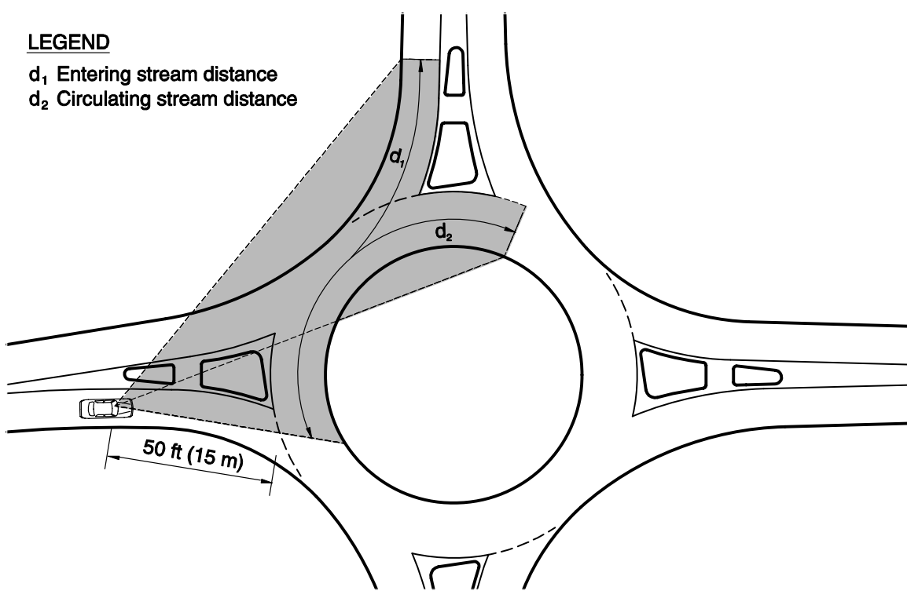

Based on AASHTO Chapter 9, intersection sight distance depends first on the intersection control type and the maneuver being checked, then grows as major-road speed increases. For stop- and yield-controlled movements, the required sight distance is further affected by design vehicle type, minor-road grade, the width to be cleared across lanes and median, intersection skew, and which maneuvers are legally permitted from the approach.
Some cases also depend on minor-road speed or vehicle length. In general, faster major-road traffic, heavier design vehicles, steeper upgrades, wider crossings, or more oblique intersections increase the required sight distance. For comparison, this legacy work reference Permit Specifications and Guidelines image is intentionally not the basis for this calculator because it is an oversimplified guide and does not capture the maneuver-specific AASHTO inputs that can be evaluated here.
